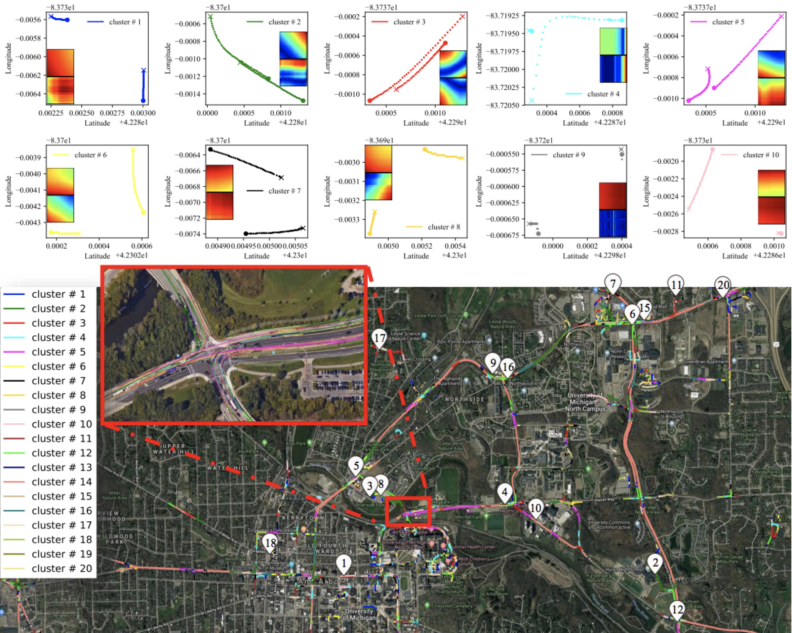
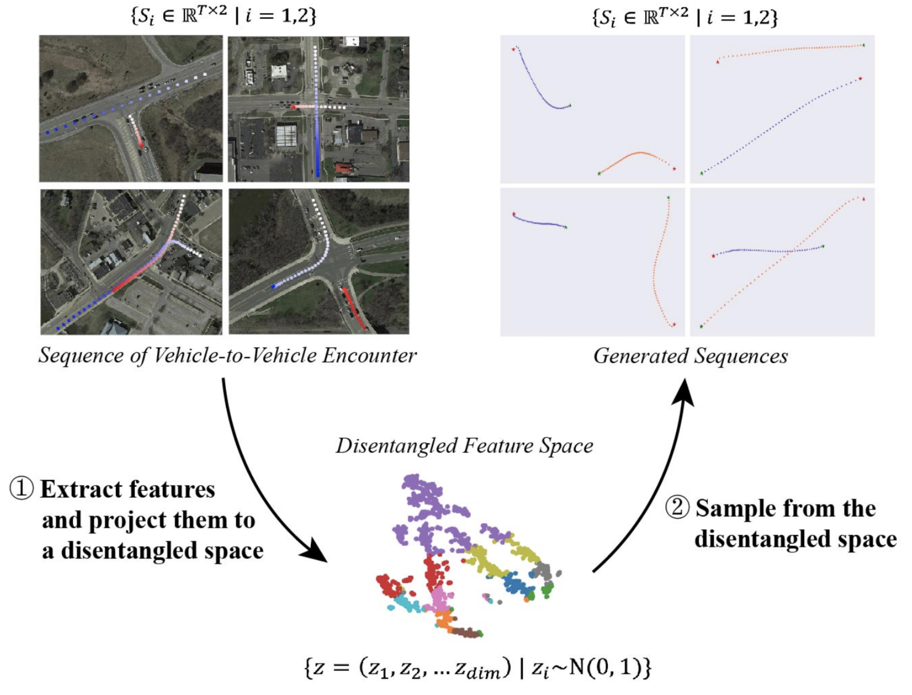
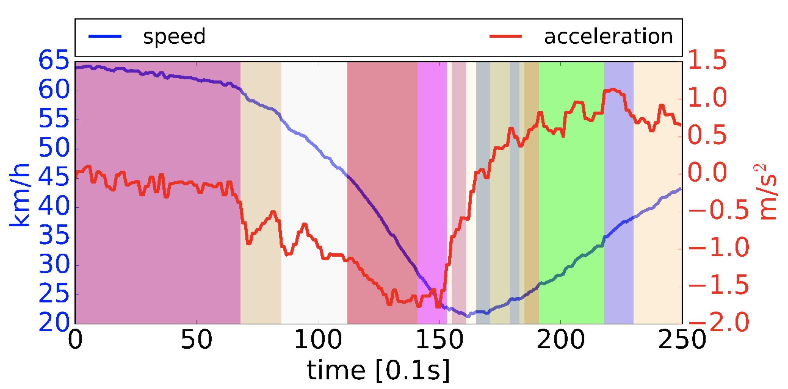

Understand the Traffic Primitives of Driving Environment

Understanding Vehicle-to-Vehicle Encounter Scenarios through Machine Learning Approaches

Wenshuo Wang, Weiyang Zhang, Ding Zhao, ''Understanding V2V Driving Scenarios through Traffic Primitives,'' Transportation Research Part C: Emerging Technologies, 2018.
|
Wenshuo Wang, Aditya Ramesh, Ding Zhao, ''Clustering of Driving Scenarios Using Connected Vehicle Datasets,''IEEE Transactions on Intelligent Transportation Systems, 2018.
|
Abstract — —Semantically understanding complex drivers’ encountering
behavior, wherein two or multiple vehicles are spatially
close to each other, does potentially benefit autonomous
car’s decision-making design. This paper presents a framework of
analyzing various encountering behaviors through decomposing
driving encounter data into small building blocks, called driving
primitives, using nonparametric Bayesian learning (NPBL) approaches,
which offers a flexible way to gain an insight into the
complex driving encounters without any prerequisite knowledge.
The effectiveness of our proposed primitive-based framework
is validated based on 976 naturalistic driving encounters, from
which more than 4000 driving primitives are learned using NPBL
– a sticky HDP-HMM, combined a hidden Markov model (HMM)
with a hierarchical Dirichlet process (HDP). After that, a dynamic
time warping method integrated with k-means clustering is then
developed to cluster all these extracted driving primitives into
groups. Experimental results find that there exist 20 kinds of
driving primitives capable of representing the basic components
of driving encounters in our database. This primitive-based
analysis methodology potentially reveals underlying information
of vehicle-vehicle encounters for self-driving applications.
Generate Multi-Vehicle Trajectories for Vehicle-to-Vehicle Encounters using Generative Adversarial Networks (GANs)

Wenhao Ding, Wenshuo Wang, Ding Zhao, ''Multi-Vehicle Trajectories Generation for Vehicle-to-Vehicle Encounters,'' arXiv preprint arXiv:1809.056802018, 2018.
|
Abstract — Generating multi-vehicle trajectories analogous to
these in real world can provide reliable and versatile testing
scenarios for autonomous vehicles. This paper presents an
unsupervised learning framework to achieve this. First, we
implement variational autoencoder (VAE) to extract interpretable
and controllable representations of vehicle encounter
trajectory. Through sampling from the distribution of these
representations, we are able to generate new meaningful driving
encounters with a developed Multi-Vehicle Trajectory Generator
(MTG). A new disentanglement metric is also proposed to
comprehensively analyze and compare models. It can reveal the
robustness of models and the dependency among latent codes,
thus providing guidance for practical application to improve
system performance. Experimental results demonstrate that
our proposed MTG outperforms baselines in terms of traffic
rationality and disentanglement. These generative samples can
provide abundant and controllable driving scenarios, thus providing
testbeds and algorithm design insights for autonomous
vehicle development.
Unifing Heterogeneous Traffic Data using Traffic Primitives
 Jiacheng Zhu, Wenshuo Wang, Ding Zhao, ''A Tempt to Unify Heterogeneous Driving Databases using Traffic Primitives,'' Proceedings of the IEEE 21th International Intelligent Transportation Systems Conference (ITSC), Maui Hawaii, US, November
4-8, 2018.
|
Jiacheng Zhu, Wenshuo Wang, Ding Zhao, ''A Tempt to Unify Heterogeneous Driving Databases using Traffic Primitives,'' Proceedings of the IEEE 21th International Intelligent Transportation Systems Conference (ITSC), Maui Hawaii, US, November
4-8, 2018.
|
Abstract — A multitude of publicly-available driving datasets and data platforms have been raised for autonomous vehicles (AV). However, the heterogeneities of databases in size, structure and driving context make existing datasets practically ineffective due to a lack of uniform frameworks and searchable indexes. In order to overcome these limitations on existing public datasets, this paper proposes a data unification framework based on traffic primitives with ability to automatically unify and label heterogeneous traffic data. This is achieved by two steps: 1)Carefully arrange raw multidimensional time series driving data into a relational database and then 2) automatically extract labeled and indexed traffic primitives from traffic data through a Bayesian nonparametric learning method. Finally, we evaluate the effectiveness of our developed framework using the collected real vehicle data.
Fuel Economy and Emission Testing for Connected and Automated Vehicles

Yan Chang, Weiqing Yang, Ding Zhao, ''Fuel Economy and Emission Testing for Connected and Automated Vehicles Using Real-world Driving Datasets,'' Proceedings of the IEEE 21st International Intelligent Transportation Systems Conference (ITSC), Maui Hawaii, US, November
4-8, 2018.
|
Abstract — By using the onboard sensing and external connectivity technology, connected and automated vehicles (CAV) could lead to improved energy efficiency, better routing, and lower traffic congestion. With the rapid development of the technology and adaptation of CAV, it is more critical to develop the universal evaluation method and the testing standard which could evaluate the impacts on energy consumption and environmental pollution of CAV fairly, especially under the various traffic conditions. In this paper, we proposed a new method and framework to evaluate the energy efficiency and emission of the vehicle based on the unsupervised learning methods. Both the real-world driving data of the evaluated vehicle and the large naturalistic driving dataset are used to perform the driving primitive analysis and coupling. Then the linear weighted estimation method could be used to calculate the testing result of the evaluated vehicle. The results show that this method can successfully identify the typical driving primitives. The couples of the driving primitives from the evaluated vehicle and the typical driving primitives from the large real-world driving dataset coincide with each other very well. This new method could enhance the standard development of the energy efficiency and emission testing of CAV and other off-cycle credits.
Traffic Primitives: Extract Fundamentional Traffic Elements using Bayesian Unsupervised Learning
 Wenshuo Wang, Ding Zhao, ''Extracting Traffic Primitives Directly from Naturalistically Logged Data for Self-Driving Applications,'' IEEE IEEE Robotics and Automation Letters, 2017.
|
Wenshuo Wang, Ding Zhao, ''Extracting Traffic Primitives Directly from Naturalistically Logged Data for Self-Driving Applications,'' IEEE IEEE Robotics and Automation Letters, 2017.
|
Wenshuo Wang, Junqiang Xi, Ding Zhao, ''Driving Style Analysis Using Primitive Driving Patterns With Bayesian Nonparametric Approaches,''IEEE Transactions on Intelligent Transportation Systems, 2017.
|
Abstract — Developing an automated vehicle, that can handle the complicated driving scenarios and appropriately interact with other road users, requires the ability to semantically learn and understand the driving environment, oftentimes,
based on the analysis of massive amount of naturalistic driving data. An important paradigm that allows automated vehicles to both learn from human drivers and develop deeper insights is understanding traffic primitives, representing principal compositions
of the entire traffic. However, the exploding driving data growth presents a great challenge in extracting primitives from a long-term multidimensional time-series traffic scenario data with multiscale varieties of road users get involved. Therefore,
automatic primitive extraction is becoming one of the cost-efficient ways to help autonomous vehicles understand and predict the complex traffic scenarios. In addition, the extracted primitives from raw data should 1) be appropriate for automated
driving applications and also 2) be easily combined to generate new driving scenarios. Existing literature does not provide a method to automatically learn these primitives from large-scale traffic data. The contribution of this paper has two manifolds.
One is that we proposed a new framework to generate new traffic scenarios from a handful of limited traffic data. The other one is that we introduce a nonparametric Bayesian learning method - a sticky hierarchical Dirichlet process hidden Markov
model - that can automatically extract primitives from multidimensional driving data without prior knowledge of the primitive settings. The developed method is validated using one day of naturalistic driving data. Experiment results show that the
nonparametric Bayesian learning method extracts primitives from traffic scenarios where both the binary and continuous events coexist.
TrafficNet: An Open Naturalistic Driving Scenario Library
 Ding Zhao, Yaohui Guo, Yunhan Jack Jia, ''TrafficNet: An Open Naturalistic Driving Scenario Library, '' Proceedings of the IEEE 20th International Intelligent Transportation Systems Conference (ITSC), Yokohama, Japan, October
16-19, 2017.
|
Ding Zhao, Yaohui Guo, Yunhan Jack Jia, ''TrafficNet: An Open Naturalistic Driving Scenario Library, '' Proceedings of the IEEE 20th International Intelligent Transportation Systems Conference (ITSC), Yokohama, Japan, October
16-19, 2017.
|
Abstract — The enormous efforts spent on collecting naturalistic driving data in the recent years has resulted in an expansion of publicly available traffic datasets, which has the potential to assist the development of the self-driving
vehicles. However, we found that many of the attempts to utilize these datasets have failed in practice due to a lack of usability concern from the organizations that host these collected data. For example, extracting data associated with certain
critical conditions from naturalistic driving data organized in chronological order may not be convenient for a vehicle engineer that doesn't have big data analytics experiences. To address the general usability challenges of these publicly available
traffic datasets, we propose TrafficNet, a large-scale and extensible library of naturalistic driving scenarios, aiming at bridging the gap between research datasets and practically usable information for vehicle engineers and researchers. The proposed
web-based driving scenario database preprocesses massive raw traffic data collected in chronological order into an organized scenario-based dataset by applying a set of categorization algorithms to label the naturalistic driving data with six different
critical driving scenarios. TrafficNet opens not only the scenario library but also the source code of these categorization methods to the public, which will foster more sophisticated and accurate scenario-based categorization algorithms to advance
the intelligent transportation research. The source code and the scenario database can be accessed at https://github.com/TrafficNet.
Evaluation of Connected Vehicle Communication with Three-year Real World Data
 Xianan Huang, Ding Zhao, Huei Peng, ''Empirical Study of DSRC Performance Based on Safety Pilot Model Deployment Data,''
IEEE Transactions on Intelligent Transportation Systems, 2017.
|
Xianan Huang, Ding Zhao, Huei Peng, ''Empirical Study of DSRC Performance Based on Safety Pilot Model Deployment Data,''
IEEE Transactions on Intelligent Transportation Systems, 2017.
|
Abstract — Dedicated Short Range Communication (DSRC) was designed to provide reliable wireless communication for intelligent transportation system applications. Sharing information among cars and between cars and the infrastructure,
pedestrians, or "the cloud" has great potential to improve safety, mobility and fuel economy. DSRC is being considered by the US Department of Transportation to be required for ground vehicles. In the past, their performance has been assessed thoroughly
in the labs and limited field testing, but not on a large fleet. In this paper, we present the analysis of DSRC performance using data from the world's largest connected vehicle test program - Safety Pilot Model Deployment lead by the University
of Michigan. We first investigate their maximum and effective range, and then study the effect of environmental factors, such as trees/foliage, weather, buildings, vehicle travel direction, and road elevation. The results can be used to guide future
DSRC equipment placement and installation, and can be used to develop DSRC communication models for numerical simulations.